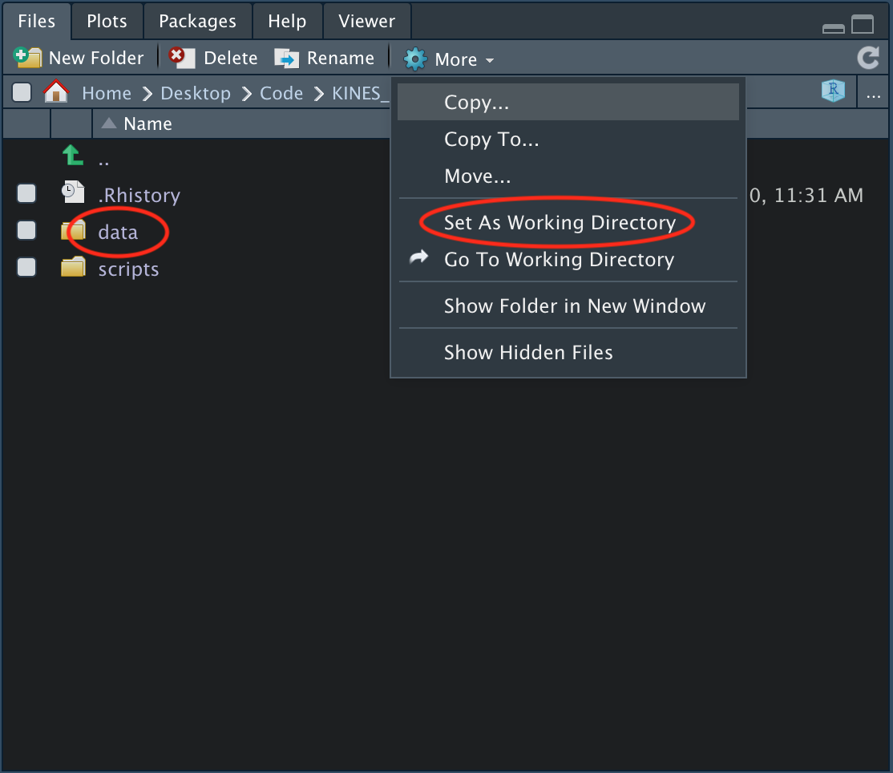

4 Reading and Writing Data
In this chapter we’ll work through a few examples of reading and writing data. If you’d like to follow along with the examples, you can download the folder for this book here. After downloading and unzipping the folder, open the file that ends with the extension
.Rproj. This will set your initial working directory to the correct folder, which is important for following along in the section below.
Setting the Working Directory
Before you start importing files, you need to set the working directory so R looks for and saves files in the correct place. “Directory” is a synonym for folder, so ‘setting the working directory’ really just means we need to tell R which folder we’d like to use to import data from. You can determine your current working directory with the getwd() function:
When you run this code, you should have a file path printed to your console. This file path is your current working directory, which means that’s where R is currently looking for files. More specifically, the last folder name listed in the file path is where R is looking for files.
To change the working directory, you simply need to navigate to the folder you’d like to import files from in the lower right pane under the files tab.

There are two folders shown in the example image above. If you’re following along with the folder we created for this book, then your folder setup should look the same.
To import files from the data folder, you would click on the data folder and then click on the More dropdown arrow and click Set as Working Directory. After doing this, you should see something in your console similar to this: setwd("~/Your/File/Path"), which indicates that your working directory has been changed to the listed file path. If you type and run the code list.files() you can see the names of the files that are in your current working directory. If you’re following along with the folder provided, you should see several data files listed when you run this code, such as the BMI_1.csv.
Changing the working directory only temporarily changes it for your current R session. It does not permanently change it. Fir this reason, it’s a good idea to add the code setwd("~/Your/File/Path"), which is the same code that’s printed to the console, to the beginning of your R script so that you do not have to manually set your working directory every time you open your R script.
Reading Data
The code in the rest of this chapter will only work if you are following along with the folder for this book and have correctly set the working directory to the data folder (see above).
Once the working directory has correctly been set, importing data files is easy. There’s a file in the data folder named BMI_1.csv. A .csv file is a comma separated value file, which, as the name implies, consists of values separated by a comma. We can import the BMI_1.csv file with the read.csv() function:
And if the BMI_1.csv was instead a .txt file (tab delimited file) or .xlsx / .xls (Excel) file, we could use the read.delim() and read_excel() functions, respectively:
# txt file
data_txt <- read.delim("BMI_1.txt")
# excel file
data_xlsx <- read_excel("BMI_1.xlsx")
# You need to load the tidyverse package to use the read_excel() functionread_excel() is a function that comes from the tidyverse package, which means you need to load the tidyverse into your R session in order to use it (library(tidyverse)).
After you’ve imported your data you can view it with the head() function:
# A tibble: 6 x 2
height weight
<dbl> <dbl>
1 68.5 155.
2 65.3 174.
3 62.1 138.
4 64.8 165.
5 70.1 149.
6 67.3 197.The three import functions above have many arguments that you can change if the data is not imported in the format you were expecting. For example, txt files can be formatted in different ways; sometimes the data is delimited with a tab, or it may be delimited with a semicolon. If your txt file is not separated by a tab, you can change the sep argument (which is short for separator) to indicate how it is separated (the default argument for sep is "\t", which means separated by a tab).
Here’s an example where the txt file is not delimited by a tab, so it gets imported incorrectly:
height.weight
1 68.5166834855604;154.681763861273
2 65.3186507959108;173.958957660404
3 62.0789448822327;138.211660043739
4 64.8491663241866;165.020083309111
5 70.1389452245124;148.630607472854
6 67.3137063327876;196.627466047489We can fix this by and passing the sep argument (which is short for separator) a semicolon, which indicates that the data is not delimited with a tab, but instead with a semicolon:
height weight
1 68.51668 154.6818
2 65.31865 173.9590
3 62.07894 138.2117
4 64.84917 165.0201
5 70.13895 148.6306
6 67.31371 196.6275As another example, you could read data from the third sheet of an excel file and skip the first 3 lines by specifying the sheet and skip arguments: read_excel(your_file, sheet = 3, skip = 3)
Writing Data
Writing files is just as easy as reading files. You can write .txt and .csv files with the following functions:
# Write .txt file
write.table(x = data, file = "data.txt", sep = "/t")
# Write .csv file
write.csv(x = data, file = "data.csv")The first argument, x, is an R object, which is typically your dataset object. The second argument, file, is what you’d like to name the file you’re creating. The data file will be saved in whatever folder you’re currently in.